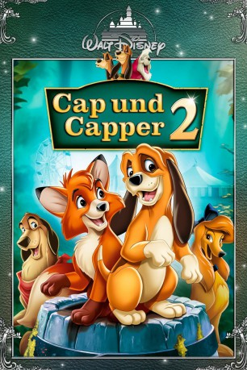

#4095 Cap und Capper 2
Alternativ: The Fox and the Hound 2
 
 IMDB-Wertung: 5.5 / 10
IMDB-Wertung: 5.5 / 10  Metascore: 0
Metascore: 0 
Capper sollte eigentlich zu einem Jagdhund ausgebildet werden, doch er tollt lieber mit seinem Freund Cap durch die Wiesen und Wälder. Als die beiden Freunde auf einem Jahrmarkt auf eine Hundeband treffen, wird Cappers wahres Talent offenbart: das Singen! Kurzerhand wird Capper Mitglied in der Band. Doch durch den ganzen Trubel vergisst er vollkommen seinen treuen Freund Cap. So wird die Freundschaft der beiden erneut auf die Probe gestellt.
Jahr: 2006
Dauer: 69 Minuten
FSK:
Land: USA Studio: Buena Vista Home EntertainmentTonspuren: DD5.1 - ,
Untertitel: Deutsch,
Auflösung: 1080p (1920x1080) Größe: 2519 MB
Genre: Komödie, Abenteuer, Animation/Trick, Familie
Regisseur: Jim Kammerud
Drehbuch: Mari Okada
Soundtrack:
Darsteller:
Datei: X:\Kinder Disney HD\Cap und Capper\Cap und Capper 2 (2006, FSK, 1920x1080).mkv seit 19.07.2016
Festplatte: Kinder-Filme+Trick
 Alle Filme aus Gruppe 'Kinder Disney HD\Cap und Capper'
Alle Filme aus Gruppe 'Kinder Disney HD\Cap und Capper'